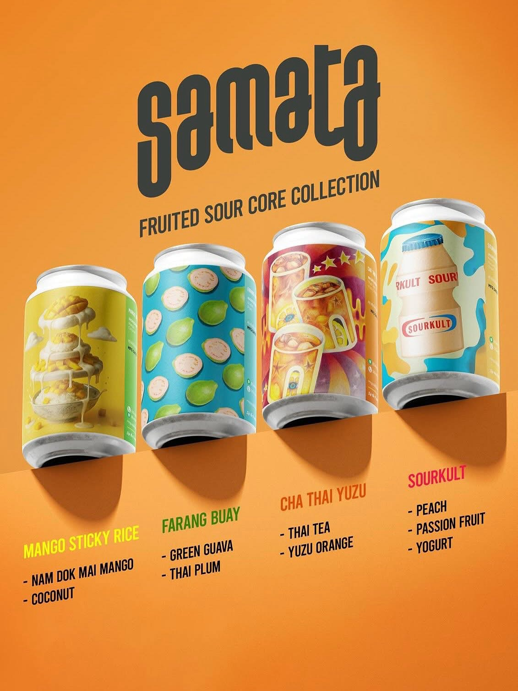
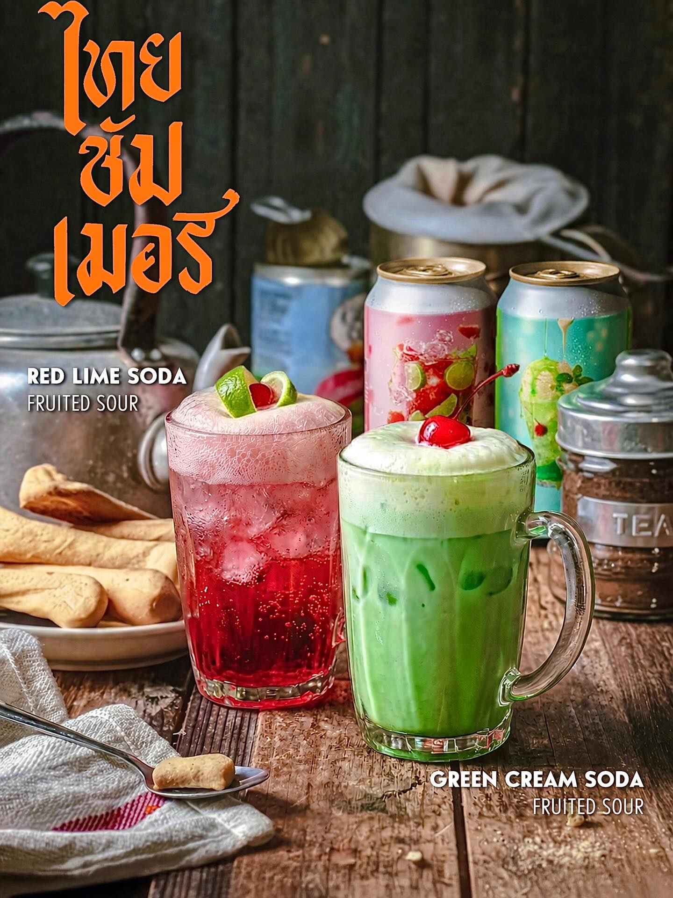
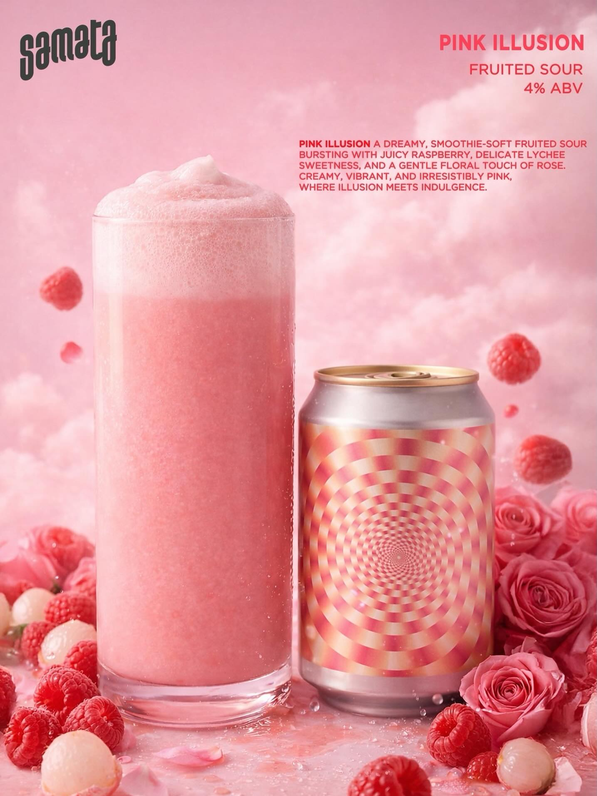
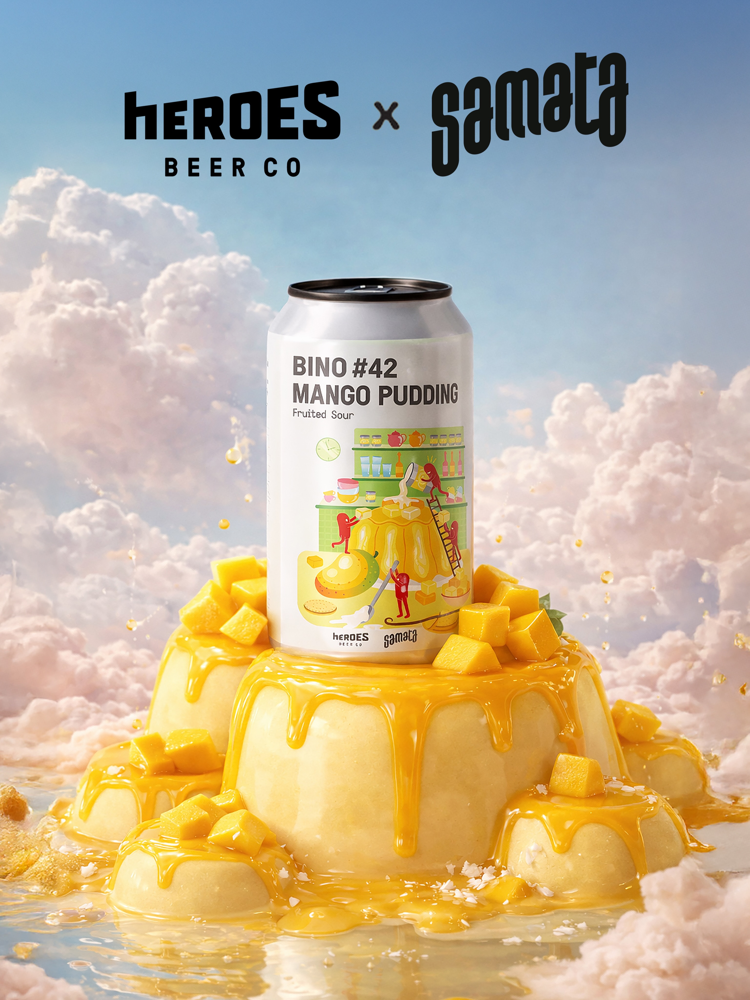
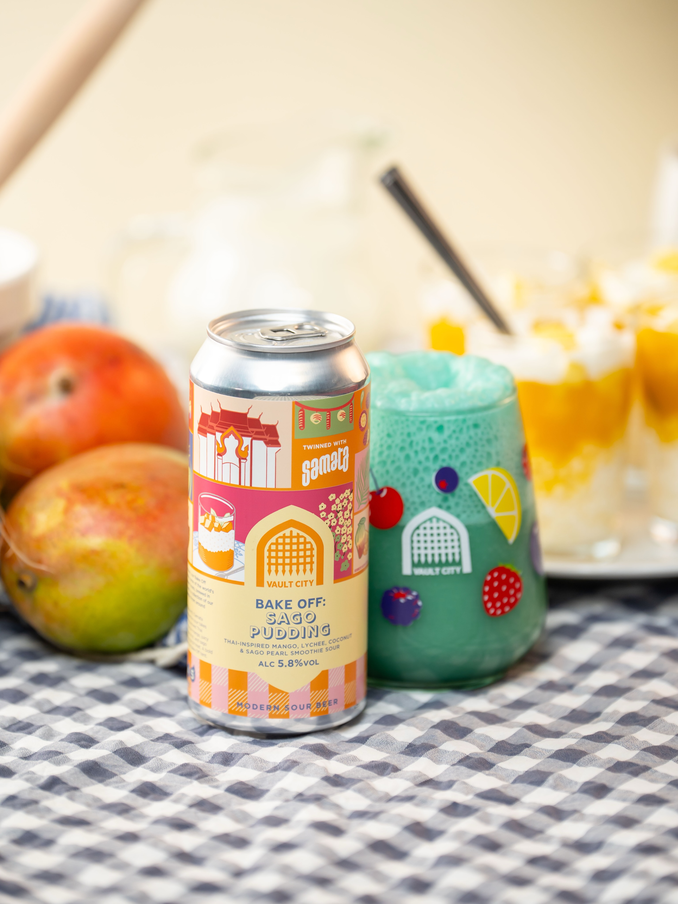
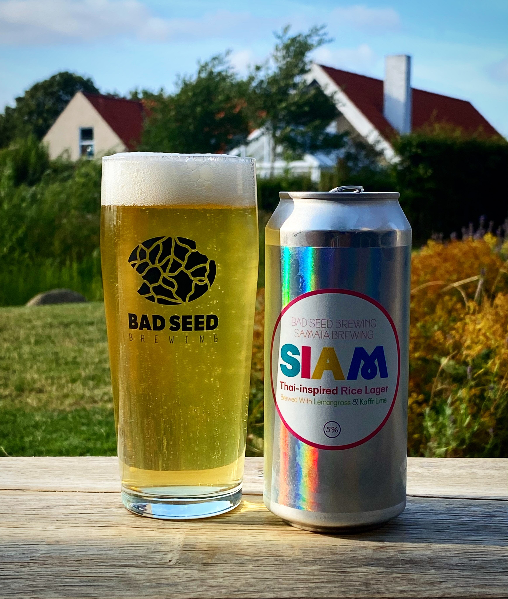
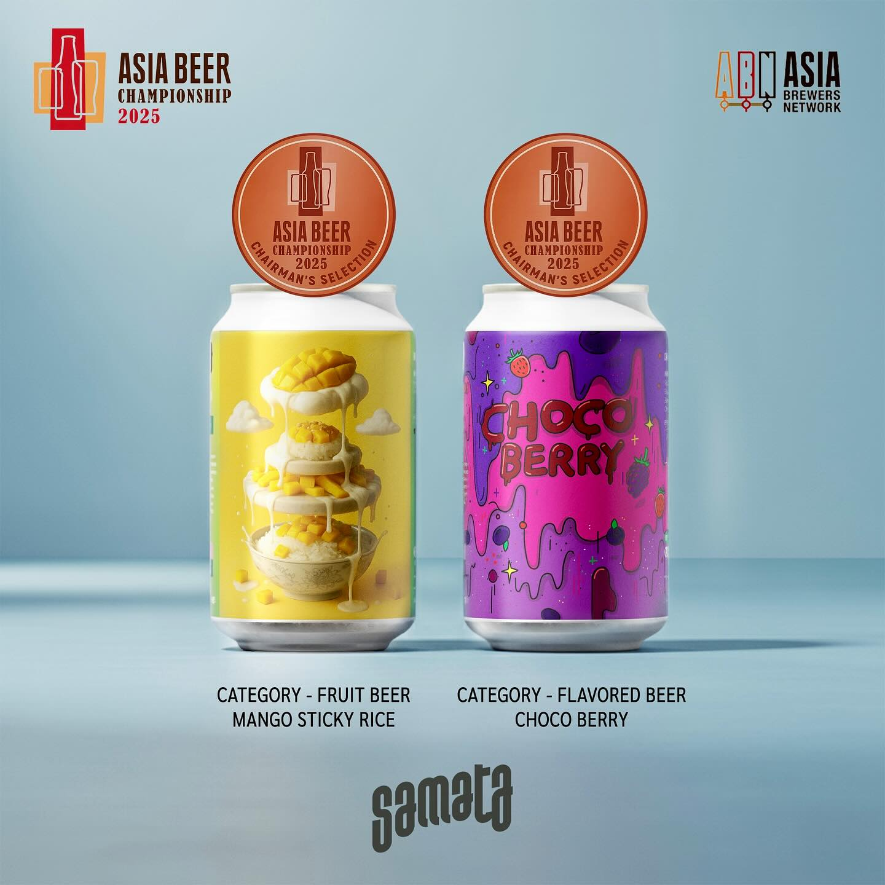
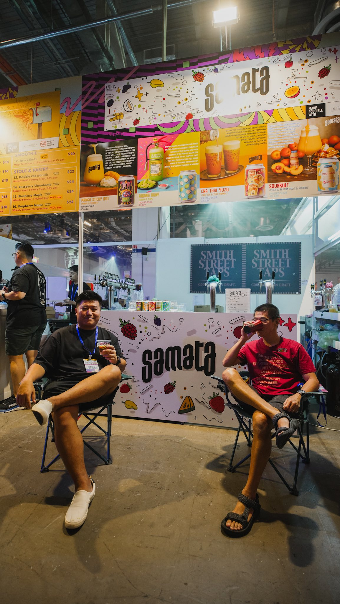
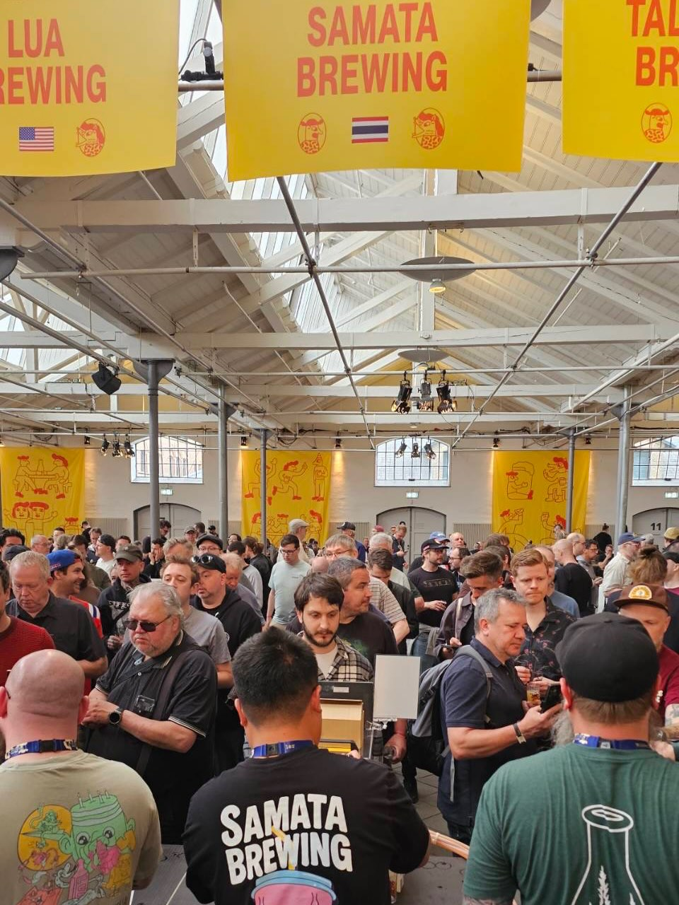
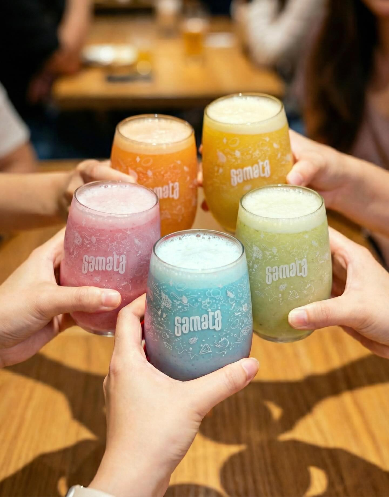

Mango Sticky Rice
The gem of Siam in a can — Nam Dok Mai mango, smooth coconut milk and a touch of salt, honoring a 200-year-old Thai recipe. ข้าวเหนียวมะม่วงในเบียร์เปรี้ยว
เบียร์เปรี้ยวผลไม้สัญชาติไทย ต้มด้วยผลไม้จริงและวัตถุดิบขนมหวานไทย จากโรงเบียร์ขนาดเล็กในกรุงเทพฯ

The gem of Siam in a can — Nam Dok Mai mango, smooth coconut milk and a touch of salt, honoring a 200-year-old Thai recipe. ข้าวเหนียวมะม่วงในเบียร์เปรี้ยว

Bright pineapple and yuzu with a warm whisper of green cardamom — tart, aromatic and dangerously refreshing. สับปะรด ยูซุ กระวาน

Juicy orange swirled with vanilla ice cream — a childhood popsicle, all grown up. ส้มกับวานิลลาไอศกรีม









From Bangkok to Copenhagen — named one of Craft Beer & Brewing's Top 10 Beers of 2025 and poured at Mikkeller Beer Celebration, while capturing the hearts of Thai beer enthusiasts nationwide.

Founded in 2017, Samata Beer first commercially debuted in 2022 and has won numerous local and international awards since then.

"Every sip will bring you through a journey through the history of Thailand."

